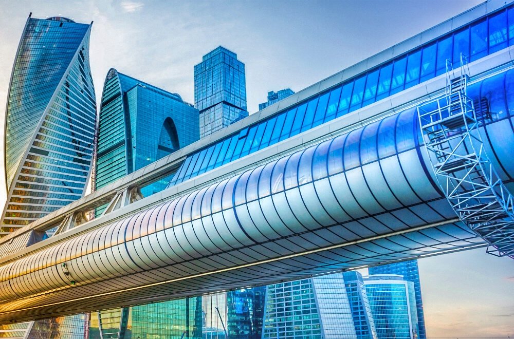

Мост Багратион
Уникальное стеклянно-бетонное сооружение — символ соединения

Характеристики
- Основной пролет:147 м
- Общая длина:214 м
- Ширина:16 м
- Годы строительства:1992-1997
История и архитектура
Мост сооружён из стекла и бетона по проекту архитектора Б. И. Тхора. Конструктор — Трауш Владимир Ильич. Назван в честь русского полководца П. И. Багратиона. Соединяет Краснопресненскую набережную с набережной Тараса Шевченко. Открыт в сентябре 1997 года к празднованию 850-летия Москвы.
🌉 Двухуровневая конструкция
Состоит из двух уровней. Нижний уровень представляет собой застеклённую на всём протяжении крытую галерею. Для удобства пешеходного движения на данном уровне установлены горизонтальные траволаторы (движущиеся дорожки).
Верхний уровень застеклён частично, на нём находится открытая смотровая площадка, с которой открывается великолепный вид на башни Москва-Сити, Москву-реку и исторический центр столицы.
🏛️ Значение для Москва-Сити
Мост Багратион стал первым сооружением на территории будущего делового центра Москва-Сити. Он символизирует соединение не только двух берегов, но и разных эпох — исторического центра и современного делового района. Сегодня это не только важная транспортная артерия, но и популярная достопримечательность среди туристов.
Как добраться
📍 Адрес: Краснопресненская набережная — набережная Тараса Шевченко
🚇 Метро: Выставочная, Международная, Деловой центр
🌉 Соединяет: Башню 2000 с остальными зданиями Москва-Сити